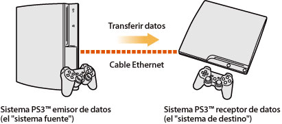
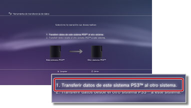
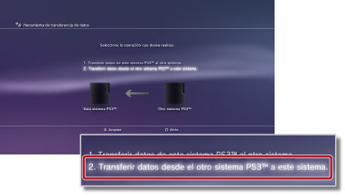

Ajustes > Ajustes del sistema > Herramienta de transferencia de datos
Herramienta de transferencia de datos
Ahora puede transferir (copiar o mover) datos guardados en el almacenamiento del sistema de un sistema PS3™ al almacenamiento del sistema de otro sistema PS3™ a través de un cable Ethernet.

Avisos
- Cuando realice esta operación, todos los datos que estén almacenados en el sistema PS3™ que va a recibir los datos (el "sistema de destino") se borrarán.
- Los datos borrados no podrán restaurarse, por lo que deberá tener cuidado de no borrar datos importantes de manera accidental. La pérdida de datos o los daños en estos son responsabilidad del usuario.
- Es posible que ciertos tipos de datos no sean transferibles. Seleccione aquí para obtener más información.
Preparación de los sistemas para transferir datos
Antes de iniciar la operación de transferencia de datos, deberá seguir los pasos que se indican a continuación.
1. |
Actualice el software del sistema de ambos sistemas PS3™ a la versión más reciente. |
|---|---|
2. |
Prepare el sistema PS3™ que va a enviar los datos (el "sistema fuente"). |
- Cree una cuenta de Sony Entertainment Network si un usuario no dispone de cuenta.
- - Seleccione
 (PlayStation™Network) >
(PlayStation™Network) >  (Inscribirse) y, a continuación, siga las instrucciones que aparecen en pantalla para crear una cuenta.
(Inscribirse) y, a continuación, siga las instrucciones que aparecen en pantalla para crear una cuenta. - Desactive el sistema PS3™ si los datos que se van a transferir contienen contenido adquirido en PlayStation®Store.
- - Seleccione (PlayStation™Network) >
 (Administración de cuentas) >
(Administración de cuentas) >  (Activación del sistema).
(Activación del sistema). - Realice una copia de seguridad, o la "sincronización" de la información de trofeos en el sistema PS3™ con el servidor de PSNSM si desea transferir la información de trofeos.
- - Inicie sesión en PSNSM y, a continuación, seleccione (PlayStation™Network) >
 (Colección de trofeos).
(Colección de trofeos). - Realice copias de seguridad de la información de su perfil y de las etapas que ha creado en LittleBigPlanet™ en su juego guardado. A continuación, puede utilizar los datos que se copiaron al jugar a LittleBigPlanet™ en el sistema PS3™ de destino.
Aviso
Las restricciones siguientes se aplican si se realiza la operación de transferencia de datos sin crear una cuenta:
- Es posible que no pueda utilizar los datos guardados en el sistema PS3™ de destino.
- Es posible que ya no pueda ganar más trofeos mediante el uso de los datos guardados que haya transferido.
- La información de trofeos no se transfiere.
Transferencia de datos
Apague ambos sistemas PS3™ y, a continuación, realice los pasos siguientes. Si los datos transferidos son datos del juego guardado que tienen prohibida la copia o datos que están protegidos por derechos de autor, se trasladarán al sistema PS3™ de destino y se borrarán del sistema PS3™ fuente.
1. |
Mediante el uso de un cable Ethernet, realice una conexión directa entre los dos sistemas PS3™. |
|---|---|
2. |
Conecte los sistemas PS3™ a diferentes conectores de entrada de vídeo en el televisor. |
3. |
Apague el televisor y, a continuación, apague los sistemas PS3™. |
4. |
En el sistema PS3™ fuente, seleccione |
5. |
Seleccione [1. Transferir datos de este sistema PS3™ al otro sistema.].  Si aún no ha llevado a cabo los pasos preparativos descritos anteriormente, siga las instrucciones que aparecen en pantalla para completarlos. |
6. |
Cuando el sistema PS3™ se encuentre en espera para iniciar la transferencia de datos, utilice el control remoto del televisor para cambiar la entrada de vídeo que va a mostrar la pantalla del sistema PS3™ de destino. |
7. |
En el sistema PS3™ de destino, seleccione |
8. |
Seleccione [2. Transferir datos desde el otro sistema PS3™ a este sistema.].  Siga las instrucciones que aparecen en pantalla para completar la operación. |
 (Ajustes) >
(Ajustes) >  (Ajustes del sistema) > [Herramienta de transferencia de datos].
(Ajustes del sistema) > [Herramienta de transferencia de datos].Notas
- Una vez completada la operación de transferencia de datos, puede apagar el sistema PS3™ fuente. Ajuste el televisor para que muestre la pantalla del sistema PS3™ fuente y, a continuación, seleccione
 (Usuarios) >
(Usuarios) >  (Apagar sistema).
(Apagar sistema). - Si el contenido que se ha descargado desde PlayStation®Store se ha transferido como parte de esta operación, deberá activar el sistema PS3™ de destino antes de poder utilizar los datos. Acceda al sistema PS3™ con el usuario propietario del contenido y, a continuación, seleccione (PlayStation™Network) > (Administración de cuentas) > (Activación del sistema) para activar el sistema.
Limitaciones de la herramienta de transferencia de datos
Ciertos tipos de datos no se pueden transferir mediante el uso de la herramienta de transferencia de datos; asimismo, otros tipos de datos se pueden transferir, pero no reproducir, en el sistema PS3™ de destino.
Para obtener información actualizada, visite el sitio Web de SIE de su región. Los siguientes tipos de datos no son transferibles:
- Pistas (incluidos "paquetes de canciones") para el software de SingStar™ que se haya guardado en el almacenamiento del sistema del sistema PS3™
- Archivos de vídeo protegidos por derechos de autor (tipos de archivo: MGV y ETS).
- Archivos de vídeo compatibles con el servicio DivX® VOD (vídeo según demanda).
- Los siguientes títulos de software de formato PlayStation®2, si están instalados en el almacenamiento del sistema del sistema PS3™:
Para los siguientes tipos de datos, deberá realizar algunos pasos adicionales después de completar la transferencia de datos para poder utilizarlos:
- GripShift™
- - Al iniciar el juego por primera vez después de la operación de transferencia de datos, aparecerá un mensaje de error y no será posible reproducir el juego. Para permitir la reproducción del juego, vuelva a descargar el juego e instálelo de nuevo.
- Datos guardados para Ghostbusters™ y Ghostbusters™: El Videojuego
- - El dispositivo no reconocerá el juego guardado cuando se inicie el juego por primera vez después de la operación de transferencia de datos. Para utilizar los datos guardados, salga del juego y, a continuación, vuelva a iniciar el juego.
Nota
Es posible que algunos títulos de software no se puedan vender en algunas regiones.